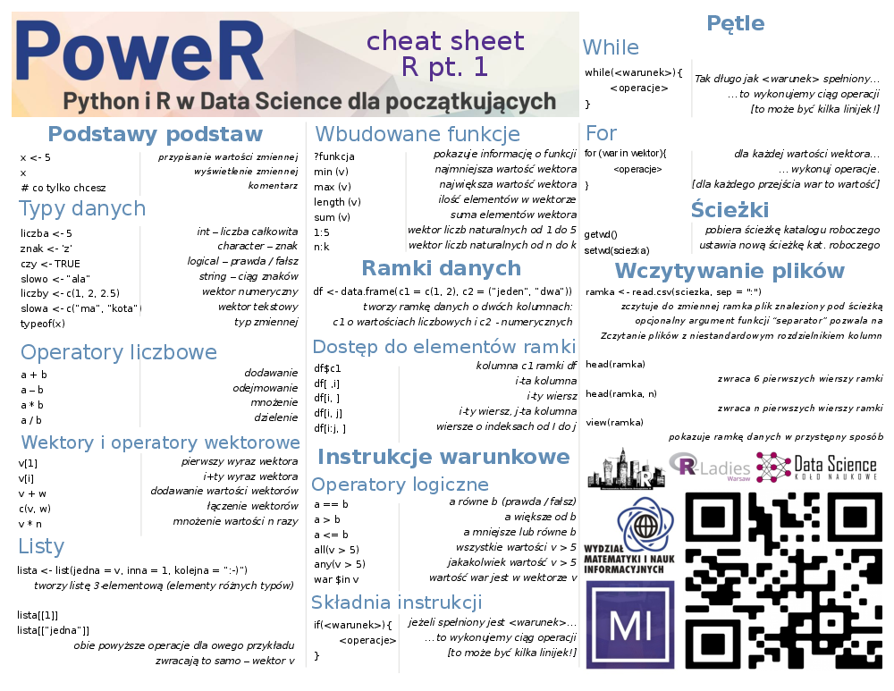
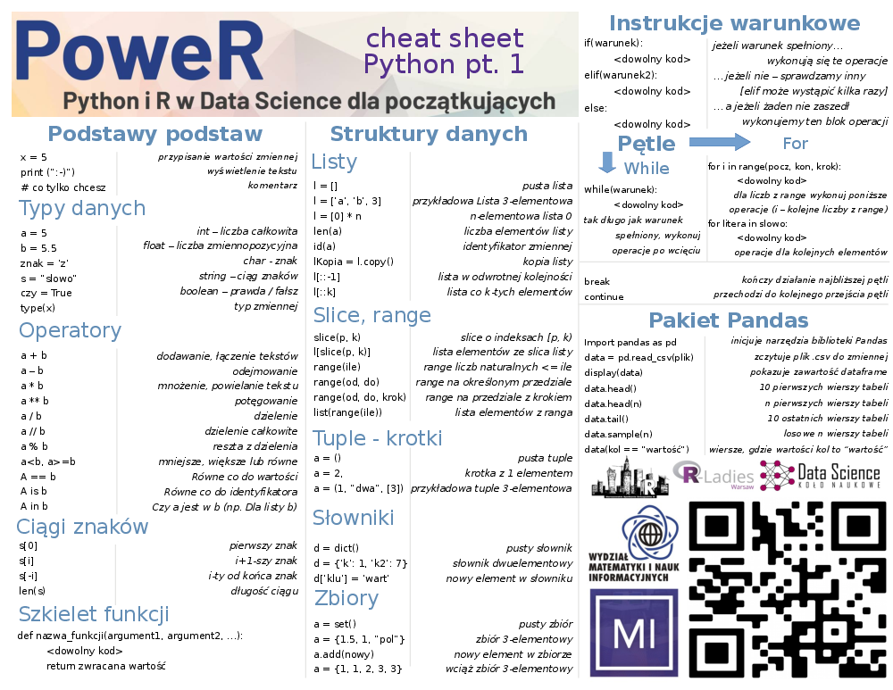

2 Podstawy języka
Wstęp do Pythona i R
2.1 R

2.1.1 Podstawowe operacje
Poniższy kod został napisany i wygenerowany RStudio. Jest to najbardziej powszechne środowisko programistyczne R-a, integrujące także wiele innych przydatnych funkcjonalności. Aplikacja jest darmowa i łatwa do zainstalowania na większości systemów operacyjnych.
R to bardzo wygodne narzędzie w kwestii operacji arytmetycznych. Sprawdźmy jak sprawdzi się dla paru z nich!
## [1] 4## [1] 8## [1] 16Oprócz wyżej wymienionych można także dokonywać wielu innych obliczeń.
Zadanie 1
Sprawdź czy R zachowuje kolejność dzialań. Jakiego przykladu można uzyć?
Przykładowe rozwiązanie:
## [1] 6W R-rze istnieją dwie metody przypisania. Głownie używamy składni x <- 5 (możliwe także 5 -> x), ale istnieje rownież opcja może bardziej instynktownego x = 5. Standardowo przynajmniej na tym etapie lepiej jest jednak używać “strzałki”.
## [1] 52.1.2 Struktury danych
Jedną z podstawowych są wektory. Służą one do przechowywania pewnej liczby elementów w jednej zmiennej.
## [1] "b"## [1] "2" "4" "6" "a" "b" "c"Oczywiście i na nich możemy dokonywać różnych operacji.
## [1] 3 7 11## [1] 10 20 30Inną istotną strukturą są listy.
## [1] 2 4 6 1 3 5## [1] 2 4 6## [1] 2 4 6Zadanie 2
Stwórz dwa wektory składające się z 5 liczb każdy, a następnie przypisz ich rożnice do nowej zmiennej o nazwie różnica.
Połącz te trzy wektory w listę.
Przykładowe rozwiązanie:
R jest także bogaty w szereg przydatnych funkcji wbudowanych. Oto niektóre z nich i ich działanie:
## [1] 5## [1] 5## [1] 25## [1] 5## [1] 1 2 3 4 5 6 7 8 9 10 11 12 13 14 15 16 17 18 19 20## [1] 50 51 52 53 54 55 56 57 58 59 60 61 62 63 64 65 66
## [18] 67 68 69 70 71 72 73 74 75 76 77 78 79 80 81 82 83
## [35] 84 85 86 87 88 89 90 91 92 93 94 95 96 97 98 99 100Kolejną bardzo ważną strukturą w R jest ramka danych.
Możemy na niej działać poprzez odpowiednie operatory:
## [1] 1 2 3## [1] 1 2 3## [1] 3## [1] 1 2 3## col_1 col_2
## 1 1 raz## col_1 col_2
## 2 2 dwa
## 3 3 trzy2.1.3 Instrukcja warunkowa
… to konstrukcja, której używamy w celu dokonywania decyzji o wykonywanych krokach. Najprościej mówiąc owy element języka pozwala na wykonanie ciągu operacji w zależności od zaproponowanego przez programistę warunku. Oto i przykładowe takie warunki:
## [1] TRUE## [1] FALSE## [1] TRUE## [1] FALSE## [1] FALSE## [1] 2 4 6## [1] TRUE FALSE FALSE## [1] FALSE## [1] TRUE## [1] TRUE… i sama instrukcja if w praktyce:
## [1] 2 4 6 8## [1] "zolw"## [1] "zolw"ifelse działa też na wektorze:
## [1] "zolw" "zolw" "kot"Zadanie 3
- Podobnie jak w powyższym przykładzie, wektor liczb nieparzystych powiększ o liczbe 7, o ile już jej nie ma.
- Dany jest wektor liczb, v <- c(1,2,2,2,2,2,3,3,3,1,1,2). Użyj instrukcji if, else lub ifelse, żeby zrobić z niego wektor zawierający wartości “jeden”, “dwa”, “trzy”.
Przykładowe rozwiązanie:
## [1] 1 3 5 7## [1] "dwa"2.1.4 Pętle
Często spotykamy się z sytuacją, kiedy daną operację lub ciąg wielu instrukcji chcemy wykonać wielokrotnie. Do tego właśnie używamy tytułowych konstrukcji.
Dwie najbardziej powszechne to while i for. Pierwsza z nich działa na podobnej zasadzie jak intrukcja if - z tym wyjątkiem, że warunek sprawdzany jest wielokrotnie - tak długo, aż będzie spełniany.
while (length(parzyste) < 10) {
len <- length(parzyste)
parzyste <- c(parzyste, parzyste[len] + 2)
}Z drugiej strony for udostępnia nam możliwość wykonania operacji konkretną ilość razy - np. dokonując czynności dla każdej liczby z listy.
Zadanie 4
Użyj pętli (której?), żeby iterując po wektorze
liczby <- 1:10stworzyć wektor 10 kolejnych liczb nieparzystych.Czy jest więcej niż jeden sposob?
Przykładowe rozwiązanie: a)
- Ależ oczywiście, że tak!
2.1.5 Pliki i odczyt danych
Bardzo istotnymi funkcjami są getwd() i setwd() - pierwsza zwraca ścieżkę do roboczego katalogu roboczego, zaś druga umożliwia ustawienie nowej.
Do odczytania ramki danych możemy użyć funkcji read.csv() - w tym celu jako pierwszy argument podajemy ścieżkę do naszego pliku, a jako opcjonalny drugi - separator [znak lub ciąg oddzielający kolejne kolumki data frame].
# seriale <- read.csv("<tu nalezy wkleic sciezke do pliku>", sep=";")
seriale <- read.csv("files/netflix_titles.csv")Zobaczmy efekt wywołania naszej funkcji - operacja head() zwróci nam kilka pierwszych wierszy, zaś View() udostępnia estetyczny ogląd tabelki.
Zadanie 5
Wypisz nazwy seriali, które wyszły w 2020 roku.
Wybierz podzbiór zawierający Twoje 3 ulubione seriale i przypisz go do nowej zmiennej.
Przykładowe rozwiązanie: a) Tworzymy wektor, który odpowiada kolejnym wierszom z ramki danych, jeśli zawiera TRUE, to znaczy, że serial był wydany w 2020, jeśli FALSE oznacza, że serial byl wydany w innym roku.
Możemy użyc wektora TRUE/FALSE do indeksowania wierszy. Poniższe polecenie wybierze tylko te wiersze, w których wektor ktore_w_2020 przyjął wartość TRUE.
2.2 Python

2.2.1 Podstawy i proste typy
## Hi!Python jest językiem interpretowanym - najprościej mówiąc oznacza to, że jest on tłumaczony i wykonywany “w locie”. Tłumaczeniem i wykonywaniem programu zajmuje się specjalny program nazwany interpreterem języka.
Najprostszym typem jest int - obejmuje on liczby całkowite.
## 21
## <class 'int'>
## 0.3
## <class 'float'>## DataScience
## 12Python jest dynamicznie typowany i typowanie jest silne - oznacza to, że język nie może niejawnie konwertować wartości różnych typów.
Wartości niektórych obiektów mogą ulec zmianie. Obiekty, których wartość może ulec zmianie, są nazywane mutable; obiekty, których wartość jest niezmienna po ich utworzeniu, nazywane są immutable.
Typ logiczny bool to dwie stałe: True i False.
## True
## <class 'bool'>
## False
## <class 'bool'>bool jest podtypem liczby całkowitej (int).
Funkcja isinstance() została zaprojektowana specjalnie w celu sprawdzenia, czy dane należą do określonej klasy (typu danych), zaś funkcja issubclass() wskazuje, czy określona klasa jest podklasą określonych klas.
## True
## True
## True## 2
## 1W Pythonie wartość liczby całkowitej nie jest ograniczona liczbą bitów i może wzrosnąć do limitu dostępnej pamięci.
W porównaniu do np. C++ gdzie int ma wartości od -2147483648 do 2147483647 - 4 bajty.
## <class 'int'> 78
## <class 'int'> -5
## <class 'int'> 10000000000000000000000000000000000000000Liczby możemy zapisywać także w w ósemkowym, szesnastkowym i binarnym systemie liczbowym.
x = 0x1 # szesnastkowy
y = 0o1 # ósemkowy
z = 0b1 # binarny
print(type(x), x)
print(type(y), y)
print(type(z), z)## <class 'int'> 1
## <class 'int'> 1
## <class 'int'> 1Jest także float - typ liczb zmiennoprzecinkowych.
## <class 'float'> 0.5
## <class 'float'> -0.5x = 0.1 + 0.1
y = 0.1 + 0.1 + 0.1
z = 0.3
s = 0.2
print(x == s)
print("{:.20f}".format(x) )
print("{:.20f}".format(s))
print(y == z)
print("{:.20f}".format(y))
print("{:.20f}".format(z))## True
## 0.20000000000000001110
## 0.20000000000000001110
## False
## 0.30000000000000004441
## 0.29999999999999998890W celu przechowywania ciągu znaków używamy typu string.
Trzy pojedyncze apostrofy są wygodne do zapisania tekstu w kilku linijkach.
W celu dokumentacji używamy trzech cudzysłowów.
Żeby odwołać się do poszczególnych części słowa indeksujemy.
a = 'Laura jadła jabłko'
print(type(a), a)
print('len(a): ', len(a)) # sprawdzanie długości słowa
print(type(a[0]), 'a[0]: ', a[0]) # pierwszy element ma indeks 0
print('a[1]: ', a[1])
print('a[len(a) - 1]: ', a[len(a) - 1]) # ostatni element to długość - 1, ponieważ indeksujemy od 0
print('a[-1] = a[len(a) - 1]: ', a[-1]) # indeksy ujemne liczą od ostatniego znaku
print('a[-18] = a[0]: ', a[-18])## <class 'str'> Laura jadła jabłko
## len(a): 20
## <class 'str'> a[0]: L
## a[1]: a
## a[len(a) - 1]: o
## a[-1] = a[len(a) - 1]: o
## a[-18] = a[0]: ua = 'Laura jadła jabłko'
b = a
print(id(a), a)
print(id(b), b)
a += '!'
print(id(a), a)
print(id(b), b)## 2057059081392 Laura jadła jabłko
## 2057059081392 Laura jadła jabłko
## 2057060425904 Laura jadła jabłko!
## 2057059081392 Laura jadła jabłkoDo zastanowienia…
- Co znaczy, że język jest dynamicznie typowany?
- Co znaczy, że język jest interpretowany? Podaj przykłady
- Jak sprawdzić, czy wartość należy do jakiejś klasy?
- Jak sprawdzić długość string?
- Jak napisać wiersz w Pythonie?
2.2.2 Struktury danych
W zależności od zadania i problemu nasze dane chcemy przechowywać w przeznaczony do tego sposób - w tym celu używamy właśnie tzw. struktur danych. Jedną z najprostszych jest lista - zezwala ona na przechowywanie elementów o różnych typach i swobodne odwołanie się do nich, a także łatwe dodawanie i usuwanie wartości.
s = [] # pusta lista
print(s)
print(type(s))
print("len:",len(s))
l = [1, 2, 3, 5, 7] # lista elementów typu int
print(l)
print(len(l))
a = [0] * 10 # lista o danym rozmiarze
print(a)
print(len(a))## []
## <class 'list'>
## len: 0
## [1, 2, 3, 5, 7]
## 5
## [0, 0, 0, 0, 0, 0, 0, 0, 0, 0]
## 10Lista jest także obiektem iterowalnym - oznacza to, że jest przystosowana do “lecenia element po elemencie.”
b = list('lista')
print(b)
print(len(b))
mix = [7,'👻','róża', 3 + 2j] # w listach może być "wszystko"
print(mix)
print(len(mix))
print(type(mix[1]), mix[1]) # indeksujemy## ['l', 'i', 's', 't', 'a']
## 5
## [7, '👻', 'róża', (3+2j)]
## 4
## <class 'str'> 👻Warto przyjrzeć sie liście także patrząc na różnicę mutable vs. immutable.
m = [1, 2, 3]
n = m
print(id(m), m)
print(id(n), n)
m.append("słoń")
print(id(m), m)
print(id(n), n)## 1700060090760 [1, 2, 3]
## 1700060090760 [1, 2, 3]
## 1700060090760 [1, 2, 3, 'słoń']
## 1700060090760 [1, 2, 3, 'słoń']Przydaje się funkcja copy()… bez zaskoczeń tworząca kopię danego obiektu.
l = [1, 2, 3, 5, 7]
more_lists = l[:] #slices
more_list2 = l.copy()
print(id(l), l)
print(id(more_lists), more_lists)
print(id(more_list2), more_list2)## 1443558805896 [1, 2, 3, 5, 7]
## 1443558806408 [1, 2, 3, 5, 7]
## 1443560837832 [1, 2, 3, 5, 7]Bardzo przydatną umiejętnością jest zaznajomienie z obiektem slice (pl: wykrojenie?). Służy on do wygodnego tworzenia ciągów arytmetycznych, a także indeksowania po utworzonych sekwencjach.
Składnia slice() to slice(start, stop, step).
## <class 'slice'> slice(2, 5, 1)
## [3, 5, 7]
## [3, 5, 7]
## [1, 2, 3, 5, 7]Abstrahując od wykrojeń, generalnie odwoływanie się do różnych elementów listy w zależności od potrzeb niemalże zawsze jest bardzo proste i łatwe do napisania - przyjrzyjmy się poniższym przykładom.
lis = [1, 2, 3, 5, 7]
print(lis[-1]) # ostatni element
print(lis[-1:]) # ostatni element, ale ...
print(lis[::-1]) # odwrotna kolejność
print(lis[::2]) # elelemty z indeksami parzystymi
print(lis[:-2]) # cała sekwencja poza ostatnimi dwoma elementami
print(lis[1::2]) # elementy z indeksami nieparzystymi## 7
## [7]
## [7, 5, 3, 2, 1]
## [1, 3, 7]
## [1, 2, 3]
## [2, 5]Na pozornie podobnej zasadzie jak slice działa range. Ten może przyjąć jeden, dwa lub trzy parametry:
- range(stop)
- range(start, stop)
- range(start, stop, step)
Przyjrzyj się kolejnym wywołaniom i pomyśl: czym rożnią się slice i range?
range_ = range(20)
print(type(range_),range_)
a = list(range(20))
b = [range(10, 20, 1)]
c = list(range(10, 20, 1))
print("a:", a)
print("b:", b)
print("c:", c)## <class 'range'> range(0, 20)
## a: [0, 1, 2, 3, 4, 5, 6, 7, 8, 9, 10, 11, 12, 13, 14, 15, 16, 17, 18, 19]
## b: [range(10, 20)]
## c: [10, 11, 12, 13, 14, 15, 16, 17, 18, 19]Sprawdź się!
- Stwórz listę liczb od 0 do 500
- Policz sumę wszystkich elementów tej listy
- Odwróć tę listę
- Dodaj na początek słowo PoweR
- Stwórz listę parzystych liczb o długości 50
- Dla stringa “PoweR warsztaty i przygoda!”, usuń wszystkie litery z 6 znaku aż do końca, wyświetl otrzymany string (oczekiwana wartość: “PoweR”)
- Mamy 2 stringi - s1 i s2. Stwórz nowy string dodając s2 w środku s1. Przykładowo:
Przed: “Supplementary” i “Vector”
Po: “SupplVectorementary”
- Policz liczbę wystąpień litery e w stringu “PoweR is the best event evER” nie patrząc na wielkość litery (oczekiwana wartość: 7)
… Jedną z naistotniejszych struktur danych w Pythonie są tuple, zwane także krotkami.
a = () # pusta tuple
print(type(a), a)
a = (1,2,3,4) # deklaracja
print(type(a), a)
a = 1,2,3,4 # inna deklaracja
print(type(a), a)
a = (1) # ważne są przecinki, a nie nawiasy
print(type(a), a)
a = 1, # tuple z 1 elementem
print(type(a), a)
n_tuple = ("mouse", [8, 4, 6], (1, 2, 3))
print(type(n_tuple), n_tuple)## <class 'tuple'> ()
## <class 'tuple'> (1, 2, 3, 4)
## <class 'tuple'> (1, 2, 3, 4)
## <class 'int'> 1
## <class 'tuple'> (1,)
## <class 'tuple'> ('mouse', [8, 4, 6], (1, 2, 3))Kolejną ważną strukturą są słowniki - ich idea to przechowywania wartości pod odpowiednimi kluczami. Należy pamiętać, że klucz jest tylko obiektem immutable (hashowalnym) i jeden klucz może mieć tylko jedną wartość (jeżeli będzie dodane kilka par z tym samym kluczem, Python zapisze ostatni). Protip: jeśli chcesz zapisać kolejność, w której elementy zostały dodane do słownika, użyj funkcji collections.OrderedDict().
a = dict() # pusty słownik
b = {} # alternatywa na deklaracje pustego słownika
c = {'klucz': 'wartość'}
print(type(a), a)
print(type(b), b)
print(type(c), c)
a['new_key'] = 'new_value' # Dodajemy nowy element do słownika
a[(7, 8)] = [('a', 'b', 'c'),'🤖']
print(a)
a['new_key'] = '👧'
print(a)## <class 'dict'> {}
## <class 'dict'> {}
## <class 'dict'> {'klucz': 'wartość'}
## {'new_key': 'new_value', (7, 8): [('a', 'b', 'c'), '🤖']}
## {'new_key': '👧', (7, 8): [('a', 'b', 'c'), '🤖']}Jeśli klucz nie występuje w słowniku, pojawia się error. Żeby tak nie było trzeba dodatkowo zdefiniować zachowanie __missing__(key). Poniższe operacje nie zadziałają poprawnie.
Do przechowywania wartości unikalnych, przyda nam sie set - zbiór. Najprościej mówiąc jest to „kontener” zawierający niepowtarzalne elementy w losowej kolejności. Czas sprawdzenia czy jakiś obiekt jest w zbiorze jest stały, w porównaniu do listy albo krotki, w których czas jest liniowo zależny od liczby elementów.
a = set()
print(type(a), a)
a = {} # nie set , a ...
print(type(a), a)
a = {'a', 'b', 'c', 'd'}
print(type(a), a)
mixed_set = {2.0, "Nicholas", (1, 2, 3)}
print(type(mixed_set), mixed_set)
mixed_set.add("Katty")
print(type(mixed_set), mixed_set)Jeżeli chcielibyśmy dodać do zbioru element już w nim będący - set go zignoruje.
2.2.3 Operatory
W celu wykonania operacji arytmetycznych i dokonania innych ingerencji między obiektami, składnia jest prosta i nieodbiegająca od standardu innych języków programowania.
Arytmetyczne:
- + dodawanie
- - odejmowanie
- * mnożenie
- ** potęgowanie
- / dzielenie -> float
- // dzielenie z zaokrągleniem do najbliższego int w dół
- % reszta z dzielenia
Porównania:
- == równe co do wartości
- != różne co do wartości
- is zwraca true, jeśli obie zmienne są tym samym obiektem (porównuje wyniki funkcji id, adresy obiektów przechowywane w pamięci)
- is not zwraca true, jeśli obie zmienne nie są tym samym obiektem
- < mniejsze
- > większe
- >= większe lub równe
- <= mniejsze lub równe
- in zwraca wartość True, jeśli w obiekcie znajduje się sekwencja o określonej wartości (np litera w stringu)
- not in czy obiekt nie jest zawarty w innym obiekcie
Logiczne:
- and zwraca wartość True, jeśli obie instrukcje są prawdziwe (x < 5 and x < 10)
- or zwraca wartość True, jeśli jedno z wyrażeń jest prawdziwe (x < 5 or x < 4)
- not odwraca wynik, zwraca False, jeśli wynik jest prawdziwy (x < 5 and x < 10)
Trochę o operatorze in: 1. W listach są przeszukiwane wszystkie elementy po kolei. Czas wyszukiwania zależy od rozmiaru listy. 2. Dla zbiorów wyszukiwanie nie zależy od rozmiaru zbioru - jest stałe 3. W przypadku słowników wyszukiwane są tylko klucze, czas wyszukiwania nie zależy od liczby elementów w słowniku. Średnio O(1)
Uwaga! Do porównywania stosujemy tylko ==. Jest to bardzo ważne, gdyż niedbałe mylenie == z = to typowy błąd początkujących programistów, który niezwykle często doprowadza do nieporozumień i zepsucia działania kodu tylko przez tą jedną literkę, którą niekiedy i wychwycić niełatwo.
Zobaczmy nasze oparatory w akcji.
x = 256
y = 256
print('id(x)', id(x))
print('id(y)', id(y))
print('x is y', x is x)
print('x == y', x == y)
x = 257
y = 257
print('id(x)', id(x))
print('id(y)', id(y))
print('x is y', x is y)
print('x == y', x == y)## id(x) 140726998450544
## id(y) 140726998450544
## x is y True
## x == y True
## id(x) 2751384603344
## id(y) 2751384603344
## x is y True
## x == y TrueZwróć uwagę, jak zmieniło się zachowanie Pythona dla operatorów == i is - dzieje się tak dlatego, że zwzględów optymalizacyjnych liczby “małe” są nieco inaczej interpretowane.
2.2.4 Instrukcja warunkowa
… to element języka pozwalający na wybór różnych ścieżek operacji w zależności od spełnionych warunków. Kluczowa jest umiejętność użytku i rozumienia instrukcji if, else i elif (skrót od else if). Działają one niemalże tak, jak można by się spodziewać po ich tłumaczeniach.
x = 10
print('przed ifem')
if x == 10:
print('x=10')
elif x == 4:
print('x=4')
elif x == 5:
print('x=5')
else:
print('else')
print('po ifie')## przed ifem
## x=10
## po ifie2.2.5 Pętle
W celu wykonania danego bloku operacji wiele razy korzystamy z pętli. Tak jak i w przypadku innych popularnych języków programowania, kluczowa jest znajomość for i while.
Na tą pierwszą najwygodniej patrzeć jak na pętlę “dla każdego…”. Oto jej działanie:
## 0
## 1
## 2
## 3
## 4Iterować możemy po po dowolnych iterowalnych obiektach.
mix = [7,'👻','róża', 3 + 2j]
for el in mix:
print(el)
for i in 'hello world':
print(i * 2, end = '')## 7
## 👻
## róża
## (3+2j)
## hheelllloo wwoorrllddW celu przerwania działania pętli korzystamy z instrukcji break, zaś kiedy chcemy rozpocząć następny obrót pętli, omijając pozostałą część - używamy continue.
## hh## hheellll wwrrllddPrzydatna jest też operacja else dla pętli - wykona się ona, jeśli pętla zakończyła się normalnie (nie za pomocą break).
## Nie ma takiej literyDrugą pętlą jakiej możemy użyć w Pythonie jest while - zezwala ona na wykonywanie operacji w bloku kodu jej przeznaczonym tak długo, aż wpisany przez programistę warunek będzie spełniony.
Intuicja: while to taki if wykonywany wielokrotnie.
## 5
## 7
## 9
## 11
## 13Rezultaty pętli for możemy także zapisywać w taki oto skrótowy sposób:
squares = []
for x in range(10):
squares.append(x ** 2)
print(squares)
squares = [x**2 for x in range(10)]
print (squares)
b = [x for x in range(10) if not x%3] # lista liczb podzielnych przez 3 and < 10
print(b)## [0, 1, 4, 9, 16, 25, 36, 49, 64, 81]
## [0, 1, 4, 9, 16, 25, 36, 49, 64, 81]
## [0, 3, 6, 9]Można także składać zbiory i słowniki.
## {'1': 1, '2': 2, '3': 3, '4': 4, '5': 5}
## {0, 1, 2, 3, 4, 5, 6, 7, 8, 9}… oraz tuple. Tylko uważaj!
a = (x for x in range(10)) # generatory
print(type(a))
print(next(a))
print(next(a))
b = tuple(x for x in range(10)) # tuple
print(type(b))## <class 'generator'>
## 0
## 1
## <class 'tuple'>Sprawdź się!
- Mamy 2 listy. Wypisz True jeśli pierwszy i ostatni element na liście jest taki sam
- Zrób listę od 1 do 100 i wypisz wszystkie liczby podzielne przez 5
- Wypisz taką piramidę
1
2 2
3 3 3
4 4 4 4
5 5 5 5 5
(Pamiętaj o print (…, end=" "))
- Połącz dwie listy tak, że do wynikowej listy z pierwszej będą liczby nie parzyste, a z drugiej parzyste. Przykładowo:
list1 = [15, 22, 23, 17, 19] list2 = [24, 43, 24, 36, 11] Merged List is [15, 23, 17, 19, 24, 24, 36]
- Policz wystąpienia kolejnych elementów i na podstawie tego stwórz słownik. Przykładowo:
list1 = [121, 43, 87, 121, 23, 43, 43, 43, 87] dict1 = {121: 2, 43: 4, 87: 2, 23: 1}
- Rozpakuj krotkę do wartości
- Zamień wszystkie ostatnie wartości w tuple na 99. Przykładowo:
l1 = [(10, 20, 40), (40, 50, 60), (70, 80, 90)] result = [(10, 20, 99), (40, 50, 99), (70, 80, 99)]
- Mamy listę mix[string, int , float …]. Stwórz nową listę która będzie miała tylko int.
2.2.6 Funkcje
W Pythonie definiuje się je za pomocą słowa kluczowego def:
## Hi, dear!W zależności od deklaracji, funkcja może przyjąć dowolną liczbę argumentów o niemalże ograniczonej swobodzie wyboru typów.
def greet(name):
"""This function greets to the person passed in as parameter"""
print("Hello, " + name + ". Good morning!")
print(greet.__doc__)
greet("Kate")## This function greets to the person passed in as parameter
## Hello, Kate. Good morning!W przypadku podawania argumentów pozycyjnie, podaje się je po nazwie funkcji w nawiasach. Możesz dodać dowolną liczbę argumentów - po prostu oddziel je przecinkiem.
def func(name):
return name + " Ref"
a = func("Katty")
print(a)
print(func("Lila"))
print(func("Ewa"))## Katty Ref
## Lila Ref
## Ewa RefMożna też podawać argumenty kluczowo, tj. przez nazwanie. Wtedy kolejność jest nieważna.
def func(person3, person2, person1):
print("Imie ryczerza to " + person3)
func(person1 = "Emil", person2 = "Tobias", person3 = "Linus")## Imie ryczerza to Linus## 101Uwaga z kolejnością argumentów z wartościami default! Deklaracja poniższej funkcji nie będzie poprawna.
Można za to napisać w taki sposób:
Python daje także możliwość użycia Args - arbitrary arguments. Jeśli nie wiesz, ile argumentów zostanie przekazanych do funkcji, dodaj gwiazdkę przed nazwą parametru w definicji funkcji.
def func(*args):
print(type(args))
print("Imie ryczerza to " + args[2])
func("Emil", "Tobias", "Linus")## <class 'tuple'>
## Imie ryczerza to LinusSą także i Kwargs - arbitrary keyword arguments. Jeśli nie wiesz, ile argumentów nazwanych zostanie przekazanych do funkcji, dodaj dwie gwiazdki przed nazwą parametru w definicji funkcji.
def func_kwargs(**places):
print("Jestem z " + places["region"] + " województwa")
func_kwargs(city = "Warszawa", region = "Łódzkiego")Pamiętajmy o Mutable vs. Immutable! Poniżej niepoprawnie zadeklarowana funkcja i tego efekty:
def printing(lista = []):
lista.append('print')
for el in lista:
print(id(lista), el)
printing()
li = ['nowe słowo']
print(id(li))
printing(li)
printing()## 2549309919624 print
## 2549340382792
## 2549340382792 nowe słowo
## 2549340382792 print
## 2549309919624 print
## 2549309919624 printNiżej już poprawna implementacja i jej wywołanie:
def printing(lista = None):
print("Przed if: ",id(lista))
lista = lista if lista else [] # druga opcja lista or []
print("Po if: ", id(lista))
lista.append('print')
for el in lista:
print(id(lista), el)
printing()
printing()
l = ['nowe słowo']
print("Przed wywołaniem funkcji: ", id(l))
printing(l)## Przed if: 140726997966048
## Po if: 2547467965320
## 2547467965320 print
## Przed if: 140726997966048
## Po if: 2547467965320
## 2547467965320 print
## Przed wywołaniem funkcji: 2547467965320
## Przed if: 2547467965320
## Po if: 2547467965320
## 2547467965320 nowe słowo
## 2547467965320 printSprawdź się!
Napisz program, który znajdzie wszystkie takie liczby, które są podzielne przez 7, ale nie są wielokrotnością 5, od 2000 do 3200 (włącznie). Otrzymane liczby należy wydrukować w oddzielonej przecinkami sekwencji w jednym wierszu.
Napisz funkcję, która oblicza i drukuje wartość zgodnie z podaną formułą: Q = (2 * C * D) / H, gdzie:
- C - argument nienazwany - integer
- D - argument nienazwany - integer
- H - nie wiadomo ile jest argumentów nienazwanych (jeżeli więcej niż 1 to zsumować H1 + H2 + H3)
- Zrób funkcję, przyjmującą listę tuple, indeks(“i”) i wartość(“w”). Zamień wszystkie wartości na indeksie “i” w tuple na wartość (“w”). Przykładowo:
l1 = [(10, 20, 40), (40, 50, 60), (70, 80, 90)]
change(l1,1,77)
result = [(10, 77, 40), (40, 77, 60), (70, 77, 90)]
2.2.7 Ramka danych i pandas - mały wstęp
W kolejnych krokach będziemy brać pod lupę dwa rodzaje tabel:
- Series - jest to jednowymiarowa struktura danych („jednowymiarowa tablica”), która może przechowywać wartości i dla każdej wartości ma także unikalny indeks
- DataFrame - dwuwymiarowa (lub więcej) wymiarowa struktura danych - w zasadzie tabela z wierszami i kolumnami. Kolumny mają nazwy, a wiersze indeksy.
Pandas to doskonała biblioteka implementująca wiele przydatnych narzedzi do obróbki i pracy nad ramką danych. Aby móc korzystać z jej mocy, musimy wczytać (i ewentualnie zainstalować, jeżeli nie zostało to wcześniej zrobione) pakiet o tej właśnie nazwie. Standardowo przyjęło się wczytywać go jako pd - dodanie do instrukcji wczytywania biblioteki magicznych czterech liter as pd zezwoli nam na możliwość odwoływania sie w każdym kolejnym kroku kiedy będziemy potrzebować pandas nie do całej sześcioliterowej nazwy pakietu, ale tylko do tych dwóch prostych znaków.
Jeżeli nie masz jeszcze zainstalowanego pakietu pandas - użyj instrukcji jak niżej… a następnie za każdym razem gdy będziesz potrzebować jego dóbr - wczytaj go za pomocą instrukcji import.
Dzięki pandas możemy łatwo wczytywać gotowe pliki .csv. Instrukcja read_csv() standardowo przyjmuje dwa argumenty - ścieżkę do pliku i opcjonalnie delimiter - sposób, w jaki oddzielone są kolejne wartości w wierszach.
Tak utworzona ramka danych ma swój własny typ.
Możemy łatwo odwołać się do pierwszych lub ostatnich wierszy data frame za pomocą metod head() i tail().
Do zwrócenia losowych rows używamy sample().
Możemy także łatwo odwołać się do wierszy spełniających podane kryteria. Przykładowo poniższa instrukcja zwróci nam te, dla których wartość odpowiadająca za title przyjmuje "Apaches*.
Sprawdź się!
- Sprawdź szczegółowe informacje o DataFrame
- Uzyskaj pierwsze 3 wiersze danych
- Wyświetl kolumny title i description
- Wyświetl kolumny show_id, country, data_added dla wierszy 0, 3, 6, 24
- Wyświetl wiersze gdzie release_year > 2010
- Wyświetl wiersze, gdzie director is NaN
- Policz ile jest takich wierszy jak w punkcie 5.
- Sprawdź typ kolumny duration
- Sprawdź co to znaczy
- Zmień nazwę kolumny title na name Dodaj nowy wiersz